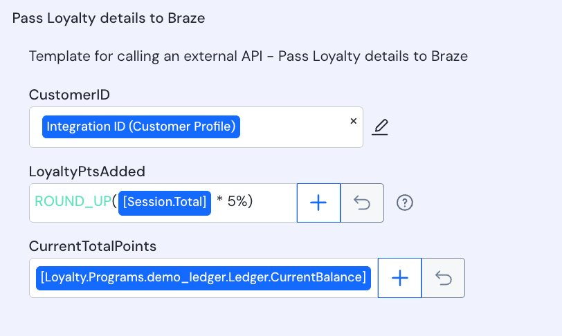
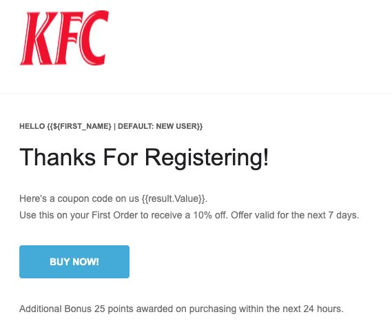
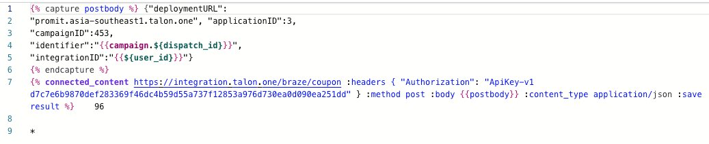
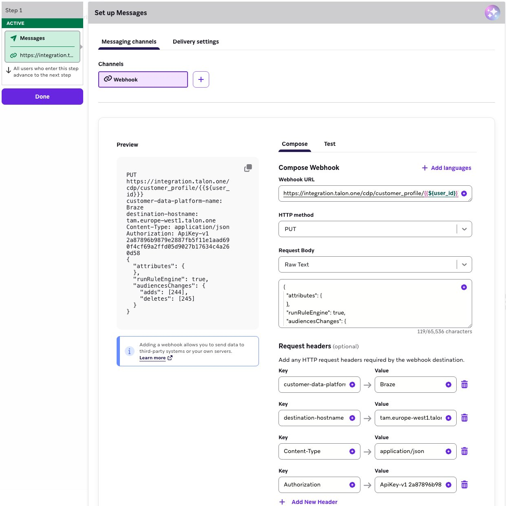
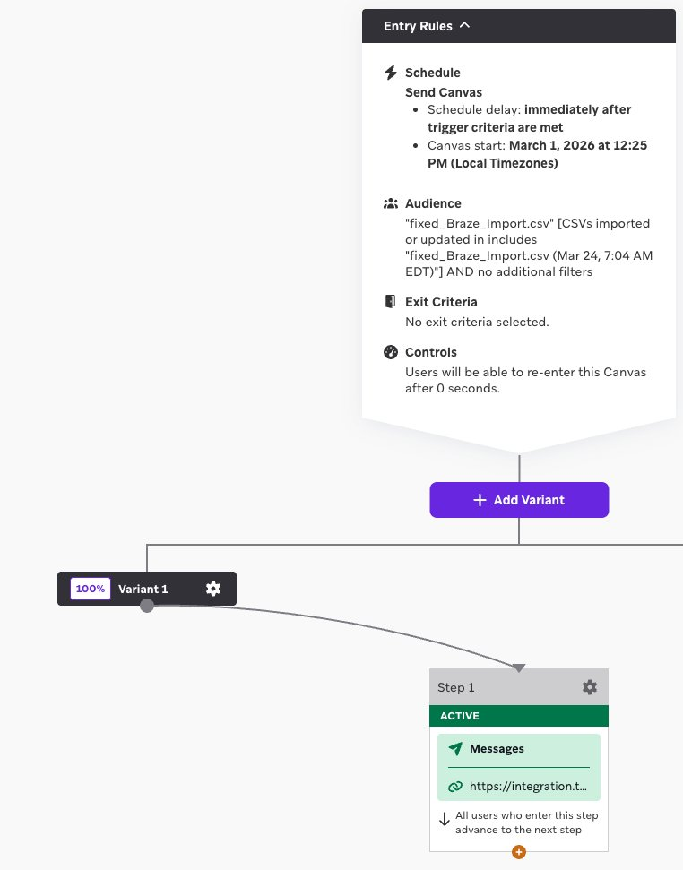
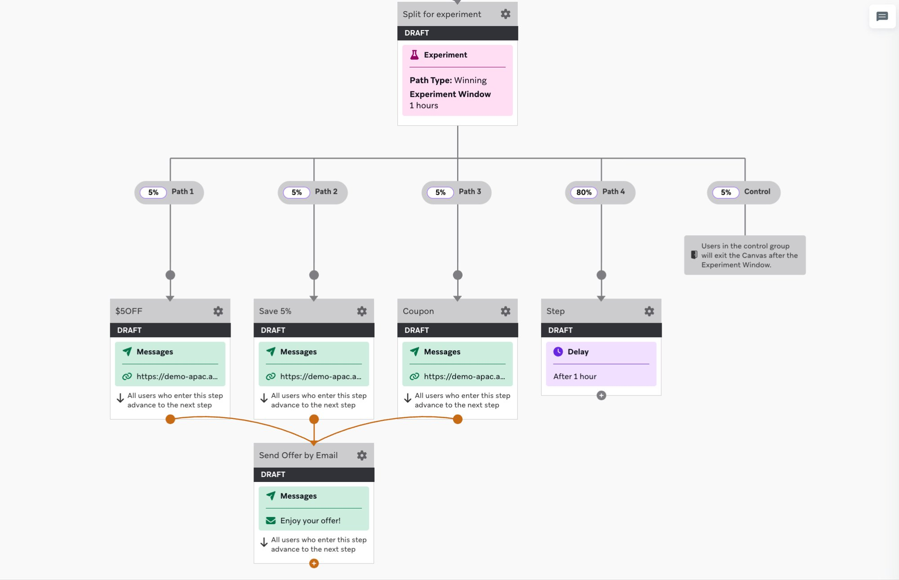

Braze & Talon.One
Technical & Strategic Integration Overview
×
Technical & Strategic Integration Overview
The Braze and Talon.One integration enables a seamless, bidirectional flow of data between the customer journey (Braze) and the incentive logic (Talon.One). This two-way communication architecture is critical: Braze pushes customer profile updates, segment changes, and behavioral triggers to Talon.One, while Talon.One instantly returns personalized offers, coupon codes, loyalty balances, and reward notifications back to Braze for immediate customer engagement.
Instead of static, generic discounts managed in disconnected systems, promotions become dynamic, context-aware, and deeply integrated into every touchpoint of the user experience. When a customer qualifies for a reward in Talon.One, Braze knows instantly—no batch delays, no manual data exports. When Braze identifies a high-value segment, Talon.One can immediately apply exclusive offer eligibility rules.
Real-time validation ensures codes are used only by eligible customers.
Deliver high-relevance incentives via the right channel at the moment of intent.
Use real-time ledger updates to trigger "Milestone" or "Tier Upgraded" messages.
Marketers launch campaigns via the Rule Builder without requiring dedicated engineering sprints.
The integration primarily utilizes Braze's Connected Content for pulling data and Webhooks/Notifications for pushing data.
| Braze Feature | Talon.One Feature | Data Exchanged | Direction |
|---|---|---|---|
| Connected Content | API Endpoints | Coupon codes, Loyalty balances, Referral codes | Braze ← Talon.One |
| Canvas | Webhooks / Notifications | Triggering "Reward Earned" or "Tier Upgraded" events | Talon.One → Braze |
| Email / Push / SMS | Personalization (Liquid) | Displaying unique codes or point balances in-message | Talon.One → Braze |
| Audiences | Customer Profiles | Syncing Braze segments to Talon.One for eligibility | Braze → Talon.One |
| Data Transformation | Webhooks / Notifications | Converting Talon.One webhook payloads into Braze event format | Talon.One → Braze |
| Multivariate Testing | Campaign Variants / Rule Sets | Testing multiple incentive strategies simultaneously and measuring performance | Braze ↔ Talon.One |
To achieve a successful integration, both platforms must use a shared Integration ID (typically the Braze external_id).
Keep Talon.One attributes in sync with Braze user profiles to power rule-based targeting.
PUT https://[your_deployment].talon.one/v1/customer_profiles/{{${user_id}}}application/jsonTrigger loyalty points or rewards immediately after a purchase.
/users/track endpoint with points_earned event/users/track endpointpoints_earned eventSynchronize Braze Segments to Talon.One Audiences for exclusive promotional eligibility.
Transform incoming Talon.One webhook payloads into Braze-compatible event formats automatically. This is critical for loyalty point notifications, coupon redemptions, tier upgrades, and reward milestones generated by Talon.One to be instantly processed by Braze for customer engagement. Data Transformation ensures both systems remain in sync—when Talon.One awards points or issues a coupon, Braze immediately knows about it and can trigger the appropriate Canvas journey, eliminating the need for manual data exports or batch synchronization jobs.
Test multiple incentive variants simultaneously to optimize promotional performance.
Below are real-world configuration examples showing how Talon.One and Braze integrate in practice. These screenshots demonstrate the bidirectional data flow in action.
This screenshot shows a Talon.One webhook template configured to pass loyalty point details to Braze when a customer earns points from a transaction.

Key Elements in This Configuration:
Integration ID (Customer Profile) to match Talon.One customer with Braze external_idROUND_UP([Session.Total] * 5%) - calculates 5% of transaction value as points earned[Loyalty.Programs.demo_ledger.Ledger.CurrentBalance] - pulls current loyalty balance from Talon.One ledgerThese screenshots show a Braze email template using Connected Content to fetch personalized coupon codes from Talon.One in real-time during message send.

Screenshot 1 - Email Preview with Dynamic Coupon:
HELLO {{${FIRST_NAME} | DEFAULT: NEW USER}} - displays customer's first name with fallback{{result.Value}}" - fetches unique coupon from Talon.One via Connected Content
Screenshot 2 - Connected Content Liquid Code:
{% capture postbody %} - Builds JSON payload for POST request to Talon.One"deploymentURL": "promit.asia-southeast1.talon.one" - Talon.One deployment endpoint"applicationID": 3 - Talon.One application identifier"campaignID": 453 - Specific campaign generating coupons"identifier": "{{campaign.${dispatch_id}}}" - Uses Braze dispatch ID for unique coupon tracking"integrationID": "{{${user_id}}}" - Maps to Braze external_id for customer association{% connected_content https://integration.talon.one/braze/coupon - Talon.One coupon generation endpoint:headers { "Authorization": "ApiKey-v1 d7c7e6b9870dcf283369..."} - Secure API authentication:method post - POST request to create new coupon:body {{postbody}} - Sends constructed JSON payload:content_type application/json - Specifies JSON content type:save result %} - Stores API response in result variable for use in email body{{result.Value}} tag displays the coupon code in the email. This ensures one-time-use codes that prevent fraud, enable precise redemption tracking, and maintain coupon inventory control—all without manual coupon list uploads or batch processes.
These screenshots show a Braze Canvas configured with webhook steps that sync audience segments to Talon.One and trigger personalized messaging based on segment membership.

Screenshot 1 - Webhook Configuration Details:
https://integration.talon.one/cdp/customer_profile/{{${user_id}}} - syncs customer profile to Talon.Onecustomer-data-platform: Braze - identifies source systemdestination-hostname: [your Talon.One deployment endpoint] - e.g., tam.europe-west1.talon.one or integration.talon.oneContent-Type: application/jsonAuthorization: ApiKey-v1 [API key created from Talon.One dashboard] - secure API authentication token
Screenshot 2 - Canvas Flow Configuration:
https://integration.t...) to sync user to Talon.One audienceThis screenshot shows a Braze Canvas configured with a multivariate experiment splitting users across different offer variants ($5 OFF, Save 5%, Coupon) with messages fetching personalized offers from Talon.One via Connected Content.

Key Elements in This Configuration:
<img src="path/to/screenshot.png" alt="Description" style="width: 100%; border-radius: 8px; box-shadow: 0 4px 12px rgba(0,0,0,0.1);"> tags. Ensure screenshots are high-resolution (at least 1920x1080) and annotated with arrows/highlights to draw attention to key configuration fields.
Proper configuration in the Braze dashboard ensures secure, reliable integration with Talon.One. Follow these best practices to avoid common pitfalls and ensure smooth operation.
Ensure your Talon.One API Key is stored in Global Settings or Content Blocks in Braze for security. This prevents hardcoding sensitive credentials directly in individual campaigns.
Best Practice:
talon_api_key){{connected_content.talon_api_key}}If your Talon.One deployment is behind a firewall, whitelist Braze's Production IP ranges to ensure Webhooks and Connected Content calls are not blocked.
Configuration Steps:
Always use the "Test" tab in the Braze Webhook composer to verify that Talon.One returns a 201 Created or 200 OK response before activating a Canvas.
Testing Checklist:
Braze's Connected Content has a 2-second timeout for API calls. If the external API (like Talon.One) doesn't respond within 2 seconds, the Connected Content call fails and the message sends without the dynamic content—resulting in emails with missing coupon codes or broken personalization.
Talon.One's sub-100ms latency is purpose-built for this requirement. With response times 20x faster than Braze's timeout threshold, Connected Content calls succeed reliably even during peak traffic, ensuring every email includes the personalized offer or loyalty balance without risk of timeouts.
Talon.One uses API key-based authentication, where a single API key provides access to multiple endpoints (customer profiles, coupons, loyalty ledger, audiences, campaigns). This simplifies integration: configure the API key once in Braze's Global Settings, then reference it across all webhooks and Connected Content calls.
Legacy platforms often use OAuth tokenization, requiring:
Result: Talon.One's API key approach enables marketers to configure integrations directly in Braze without engineering support. Legacy tokenization systems require dedicated backend services to manage token lifecycle, adding operational complexity and points of failure.
Talon.One is engineered for high-velocity environments with a globally distributed infrastructure that ensures lightning-fast response times. This ensures that when Braze makes a Connected Content call to fetch a coupon during a message send, the response is near-instant, preventing timeouts and ensuring a smooth user experience.
Scenario: Braze sends 500,000 promotional emails with Connected Content calls to fetch personalized discount codes from a legacy promotion system.
Talon.One implements industry-leading webhook reliability to ensure no promotional event is lost due to temporary network issues or downstream system failures.
Scenario: A customer completes a $200 purchase. The promotion system awards 200 loyalty points and attempts to send a webhook to Braze to trigger a "Points Earned!" push notification.
❌ Enterprise Marketing Platforms (Limited Retry Windows):
✅ Talon.One (Extended Retry Logic - 10 Attempts Over Hours):
💡 Key Takeaway: Enterprise platforms inherit retry policies from email systems (optimized for seconds), not cross-system integration where 10-30 minute recovery is normal. Talon.One's approach matches distributed systems reality.
Scenario: Black Friday. Braze sends 2 million push notifications announcing a flash sale. Each notification includes a Connected Content call to Talon.One to fetch a unique 20% off code.
While legacy "all-in-one" marketing suites often bundle promotion tools, Talon.One's headless, best-of-breed approach provides distinct advantages that have proven transformative for brands.
| Category | Talon.One | Legacy Suite Providers |
|---|---|---|
| Architecture | API-First, Headless | Monolithic, All-in-One Marketing Clouds |
| Integration Approach | Specialized "brain" that plugs into existing stack | Creates data silos and redundant features |
| Rule Flexibility | Limitless - any data point can trigger rules | Restricted to rigid templates |
| Performance | Sub-100ms, handles 10,000+ req/sec | Higher latency during peak traffic |
| Scalability | Built for modern high-traffic events | Often struggles during flash sales/campaigns |
| API Limits | No hard limits - infrastructure autoscales as per traffic requirement | Often limited by hard limits and higher response times during peak traffic |
What it means: Unlike monolithic suites that create data silos and redundant features, Talon.One acts as a specialized "brain" that plugs directly into Braze, avoiding architectural bloat.
Why it matters: You're not forced to adopt a vendor's entire ecosystem. KFC Thailand can evolve their tech stack for Engagement, Data Management and E-commerce over time, but having a headless system like Talon.One will keep the loyalty and offer logic decoupled from other systems.
What it means: Most traditional platforms are restricted to rigid templates. Talon.One allows any data point (weather, SKU, location, cart value, time of day, customer tier) to trigger a promotion rule.
Why it matters: Campaign velocity and creativity increase dramatically. A "Buy 2 Zinger Burgers between 2-4 PM on rainy days in Bangkok and get free delivery" rule takes 5 minutes to build in Talon.One vs. being impossible or requiring months of custom development in template-based systems.
What it means: Talon.One handles tens of thousands of requests per second, whereas legacy systems often struggle with latency during high-traffic events like flash sales or national promotions.
Why it matters: During KFC Thailand's "Flash Friday" campaigns (limited-time offers announced via Braze), hundreds of thousands of customers simultaneously request coupon codes. Talon.One processes these requests with sub-100ms latency while legacy systems would queue requests or timeout entirely.
Real-world impact: Zero downtime during Thailand's peak dinner hours (6-8 PM) when promotion redemption volume spikes 300%. Competitors using all-in-one suites report 20-40% of customers abandoning checkout due to slow coupon validation.
KFC Thailand Use Case: A previously churned customer with a return order history places an order for a family meal during peak dinner hours (7-9 PM). Talon.One instantly evaluates multiple signals:
Talon.One Action: Automatically awards bonus loyalty points (2x or 3x) to encourage re-engagement and build habit formation during this critical win-back moment.
Braze Trigger: Customer immediately receives a push notification via Braze: "Welcome back! You've earned 150 bonus points on this order. Your next family meal is even more rewarding!"
Why it matters: Legacy systems can't combine multiple real-time signals (churn status + order type + time + behavior) into a single rule. They'd require separate batch jobs, manual segmentation, or miss the opportunity entirely. Talon.One makes this contextual intelligence instant and automatic.
For brands looking to power real-time, data-driven incentives inside complex customer journeys, Talon.One provides the technical agility, sub-100ms speed, and resilient architecture that legacy suites cannot match. The combination of Braze's best-in-class engagement platform with Talon.One's promotion engine creates a competitive moat: personalized incentives delivered at precisely the right moment, through the right channel, with zero manual intervention.
This isn't just about technology—it's about enabling marketing teams to move at the speed of customer expectations.